THE PROTECTORS:
A Matter of Life and Death
(Don Chaffey: Summer 1971)
Harry (Robert Vaughn) arrives by beach buggy to meet Paul (Tony Anholt)
and they watch as a local fishing boat leaves through the grotto. An
asassin is already there and prepares to shoot a brace of protectors.
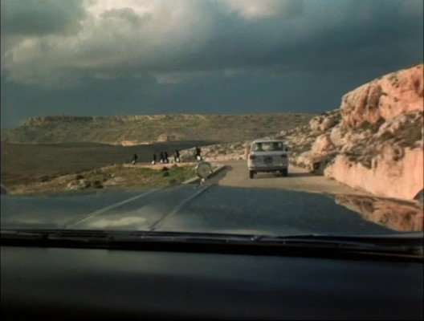
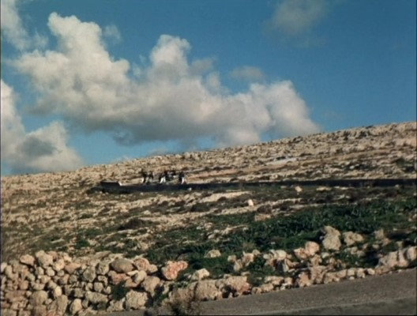
THE SAINT: Vendetta for The Saint (Jim O’Connolly: 1967)After descovering Templer's escape the Mafia men leave the villa in convoy to search for him.
Victoria Lines, Rabat, Malta
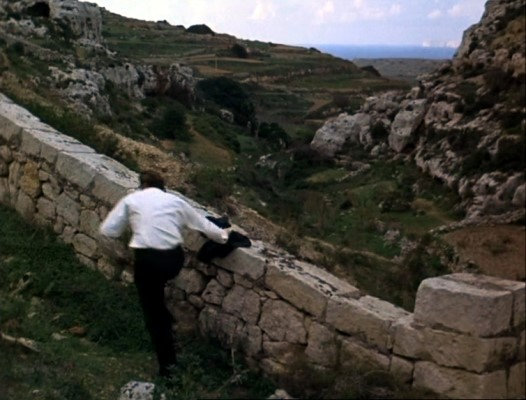
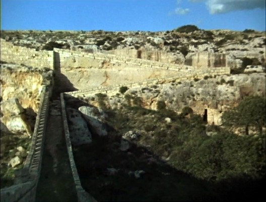
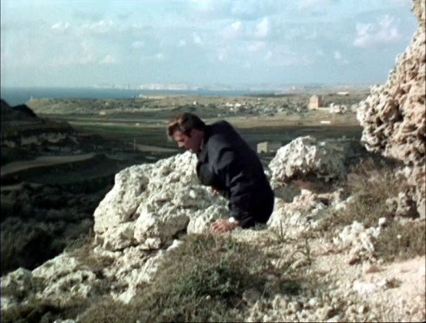
THE SAINT: Vendetta for The Saint (Jim
O’Connolly: 1967)
Simon Templer (Roger Moore) climbs down from the villa. After escaping
the Mafia men at the bridge The Saint (Roger Moore)
makes his way along a fortified wall (The Victoria Lines).
THE PROTECTORS:
Ceremony for the Dead
(Jeremy Summers: Summer 1971)
Once Caroline, the Contessa di Contini (Nyree Dawn Porter) is in on
board the yacht they moor in a quiet bay (The Blue lagoon) and Harry
(Robert Vaughn) introduces Carolline (Nyree Dawn Porter) to Madame Rue
(Toby Robins). Later, Harry Rule (Robert Vaughn) and Paul Buchet (Tony
Anholt) race after the kidnappers in their launch, piloted by the
skipper (Robert Sessions). The kidnappers weave in and out of the rocks
and caves but are forced to heave too when Paul fires on them with his
gun. When they board The Protectors find Madame Rue (Toby Robins) and
the body of the President.
THE PROTECTORS:
A Matter of Life and Death
(Don Chaffey: Summer 1971)
Guided by a mysterious voice from a radio Harry Rule (Robert Vaughn)
arrives in a Land Rover at some ruins in North Africa. He is to meet a
smuggler Goran (Barrie Houghton) to discuss the mysterious commodity.
THE PROTECTORS:
Ceremony for the Dead
(Jeremy
Summers: Summer 1971)
The ambulance delivers the kidnapped president to a boat in the harbour
and drives away. Harry (Robert Vaughn), Carolline (Nyree
Dawn Porter) and Paul (Tony Anholt) arrive too late to do anything.
(Jean Pierre Borg, August 2007)
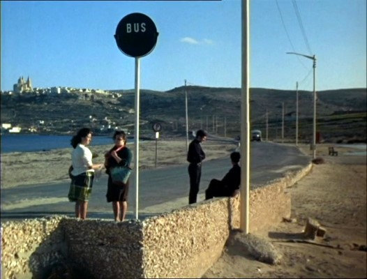
THE SAINT: Vendetta for The Saint (Jim O’Connolly: December, 1967)
The Saint tells the bus driver to ignore the passengers waiting at the
bus stop
(Jean Pierre Borg, August 2007)
THE PROTECTORS:
Ceremony for the Dead
(Jeremy Summers: Summer 1971)
Harry (Robert Vaughn), Caroline di Contini (Nyree Dawn Porter) and Paul
Buchet (Tony Anholt) drive the beach buggy to a convenient location to
watch Madame Rue’s negotiations with the kidnappers.
THE PROTECTORS:
A Matter of Life and Death
(Don Chaffey: Summer 1971)
Harry Rule (Robert Vaughn) arrives on a North African beach. Two
sunbathers leave in a boat leaving a radio behind. This radio then
gives Harry his instructions.
JOURNEY THE THE UNKNOWN:
One on an Island (Noël
Howard: Summer 1968)
Most of the action takes place on the beach here.
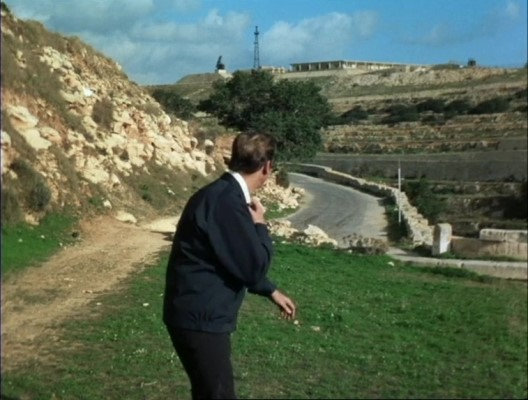
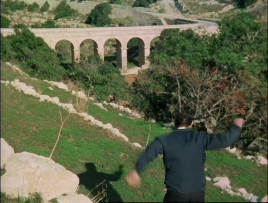
THE SAINT: Vendetta for The Saint (Jim O’Connolly: December, 1967)
The Saint (Roger Moore) scrambles down the cliffs, but his escape is
cut off by various gang members at the bridge (road to Madliena
Village, bridge over Wied id-Dis).
(Jean Pierre Borg, August 2007)
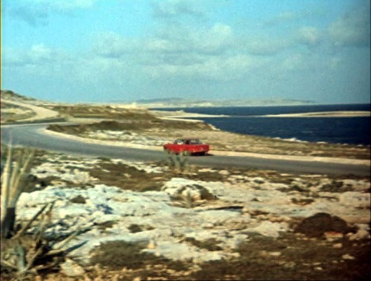
THE SAINT: Vendetta for The Saint (Jim O’Connolly: December, 1967)
The Simon drives Gina and the wounded Lilly to Gina's villa.
(Spotted by Sietse
Postma, August 2023)
THE PROTECTORS:
A Matter of Life and Death
(Don Chaffey: Summer 1971)
Harry Rule (Robert Vaughn) arrives in Malta. Paul Buchet (Tony Anholt)
is their to meet him in his beach buggy.
THE PROTECTORS:
Ceremony for the Dead
(Jeremy Summers: Summer 1971)
As the president’s plane lands Carolline di Contini (Nyree Dawn Porter)
is driven to the plane posing as Madame Rue. Harry Rule (Robert Vaughn)
is overseeing the operation from a police Land Rover. The president is
kidnapped by motorcyclists and whisked away in the Land Rover. After
the excitement is over the real Madame Rue (Toby Robins) arrives to
take the real president away in an ambulance. After the mystery is
solved Harry and Caroline go for a drink with the skipper (Robert
Sessions). Caroline leaves with the skipper and Harry starts a
conversation with the representative of a car hire company (Jenny Lee
Wright).
THE PROTECTORS:
It was all Over in Leipzig
(Don Chaffey: Summer 1971)
Jim Palmer (Ron Randall) visits a local fishing village to ask about
the arms smuggling operation.
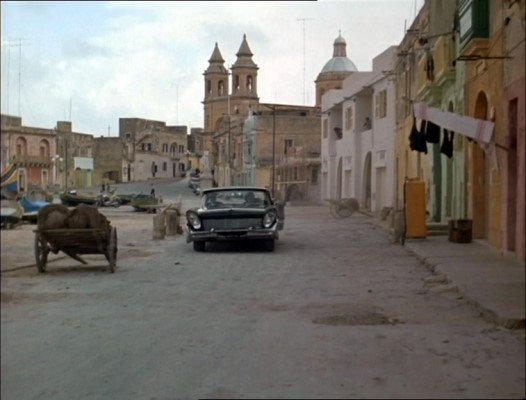
THE SAINT: Vendetta for The Saint (Jim O’Connolly: December, 1967)
The Saint (Roger Moore) makes his way through the fishing village to
the bus stop. He is spoted by a gang memeber but manages to fight his
way out and catch the Palermo bus.
THE PROTECTORS:
A Matter of Life and Death
(Don Chaffey: Summer 1971)
Harry (Robert Vaughn) races down from Mdina in the beach buggy, to the
harbour where he sees Baruna (Maxwell Shaw) paying a fisherman. Later
Harry and Paul (Tony Anholt) force the would be assassin to report a
successful hit to James Leroy Mallory by telephone.
THE PROTECTORS:
It was all Over in Leipzig
(Don Chaffey: Summer 1971)
Harry (Robert Vaughn) arrives at the Harbour in a beach buggy and acts
as coordinator for the search for the missing pickup. Luckily Harry is
in the right place to intercept the truck when it drives into the
village. Before he can question the driver (Paul Weston) he is shot by
Jim Palmer (Ron Randall) as he and The Contessa (Nyree Dawn Porter)
arrive on the scene.
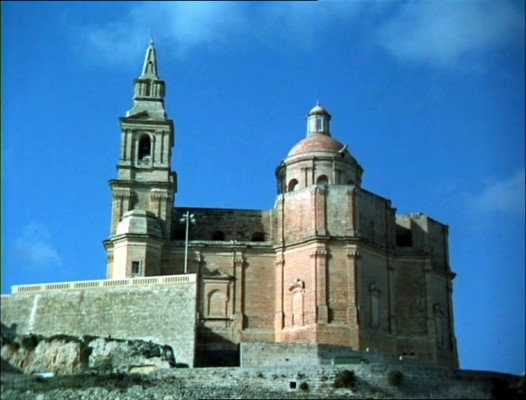
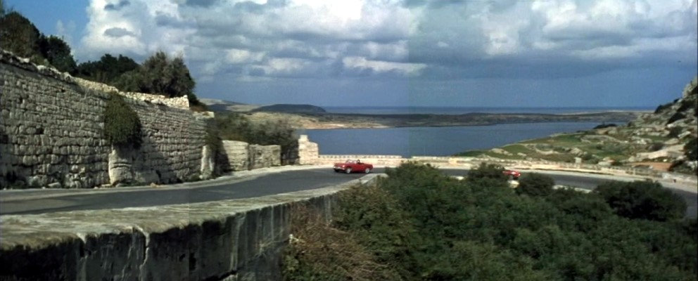
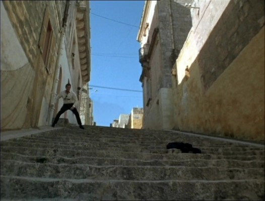
Triq San Publiju
THE SAINT: Vendetta for The Saint (Jim O’Connolly: December, 1967)
Once on Capri, Lilly drives The Saint from the airport to see
Allessadro (Triq Il-Marfa, Mellieħa). On the way back, Lilly nearly
drives off the road when Simon gives her some money so she can escape
from Allessadro. Simon (Roger Moore) is in the fishing village
when Allessadro's men arrive he hides on a steep stairway (Triq San Publiju). After
overcomming one of the gunmen he runs to board the bus to Palermo.
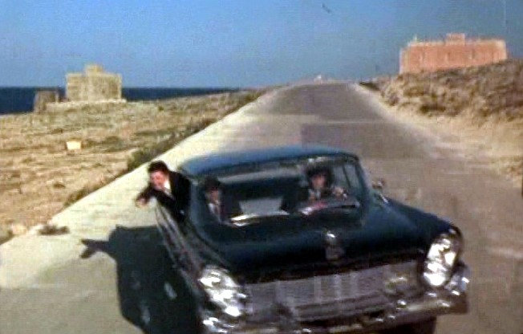
THE SAINT: Vendetta for The Saint (Jim O’Connolly: December, 1967)
The
Saint makes his way out of the fishing village on the Palermo bus and
is chased by gunmen (Wied Busa Battery, Triq Il-Marfa).
(Identified by Sietse Postma, July 2023)

The Saint makes his way out of the fishing village on the Palermo bus and is chased by gunmen (Triq Ramlet junction Mellieha Bay, the pillbox has losts its tower).
THE PROTECTORS:
It Could be Practically Anywhere on
the Island (Robert Vaughn: Summer 1971)
Mary Laroche (Madeline Hinde) takes Felix Costa (Sherwood Price) to
meet Flyn (Vernon Dobtcheff) at the castellated house (Torri ta'
Sant'Agata).
THE PROTECTORS:
Ceremony for the Dead
(Jeremy Summers: Summer 1971)
The ambulance carrying the real president is forced to a standstill (by
the road down to Anchor Bay, a.k.a. Popeye Village). The ambulance crew
are replaced by kidnappers and they drive off.
Mdina
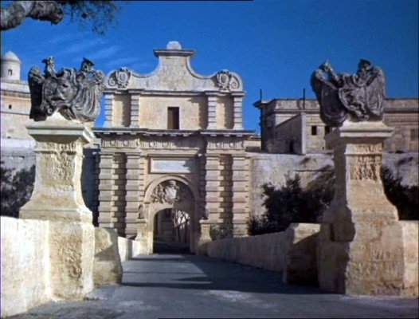
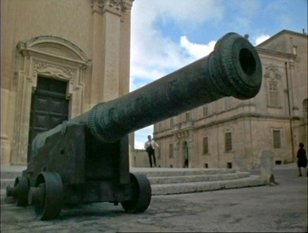
THE SAINT: Vendetta for The Saint (Jim O’Connolly: December, 1967)
The Saint (Roger Moore) tells the bus driver to stop his bus in the
gate to “Cefalu”, he makes his way to his hotel (in cathederal
square) ,the “Savoia Hotel”.
THE PROTECTORS:
A Matter of Life and Death
(Don Chaffey: Summer 1971)
Harry takes The Conteassa (Nyree Dawn Porter) by beach buggy to the car
park by the gates of Mdina. She takes a horse-drawn carriage into town
for her meeting with James Leroy Mallory. Harry (Robert Vaughn) waits
by the roadside in a beach buggy. When Baruna passes in his car Harry
follows (passing The Malta Railway Museum Station).
(Jean Pierre Borg, August 2007)
James
Leroy Mallory (Patrick Allen) together with his heavy, Baruna (Maxwell
Shaw) and
his girlfriend (Julie Crossthwait), are renting a villa in the town.
The
Contessa (Nyree Dawn Porter) pays them a visit pretending to be a buyer
for
their merchandise (House opposite Fontanella Tea Garden, Bastion Street).
(Identified by Sietse Postma, November 2023)


THE PROTECTORS:
It was all Over in Leipzig
(Don Chaffey: Summer 1971)
Harry Rule (Robert Vaughn) confronts Jim Palmer (Ron Randall) at the
villa where he is stockpiling arms.
When things turn nasty Paul Buchet (Tony Anholt) is waiting with a
rifle to give support. The police arrive and Palmer takes the
opportunity to flee.
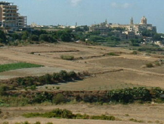
Photo: Ryan McGuinness
THE PROTECTORS:
It Could be Practically Anywhere on
the Island (Robert Vaughn: Summer 1971)
Rita McCall (Linda Staab) arrives at The Grande Hotel Verdala (The
Grand Hotel Verdala, Inguanez Street) and her dog is stolen (most of
this episode is filmed in and around the hotel).
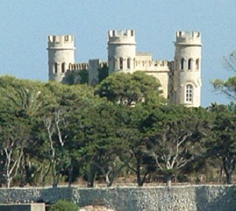
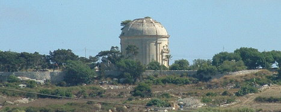
Photos: Ryan McGuinness
THE PROTECTORS:
Ceremony for the Dead
(Jeremy Summers: Summer 1971)
Madame Rue (Toby Robins) arrives at the house (tal-Virtu castle) as
instructed by the kidnappers and is dragged inside Harry (Robert
Vaughn), Carolline di Contini (Nyree Dawn Porter) and Paul Buchet (Tony
Anholt) climb the hill into the grounds of the villa where Madame Rue
is being held (The Grand Hotel Verdala can be seen on the hill above)
(Jean Pierre Borg, August 2007)
THE SAINT: Vendetta for the Saint (Jim O’Connolly: December, 1967)
The Saint arrives back at his Naples hotel (The Sheraton, redeveloped
as The Westin Dragonara Resort).
Television:
PAUL TEMPLE: The Games People Play (1970)
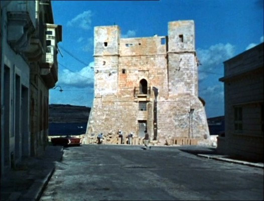
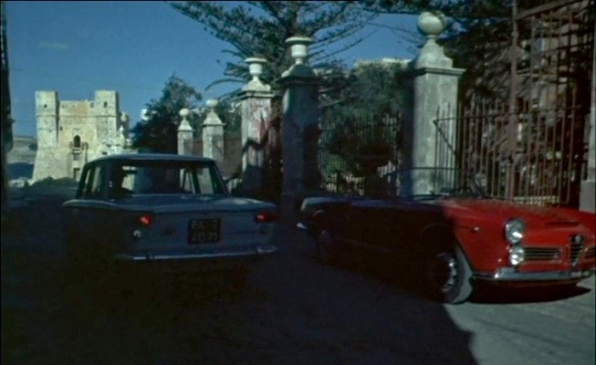
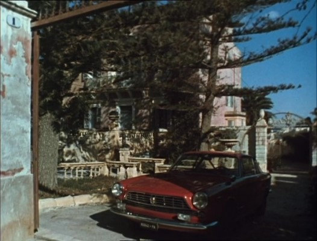
THE SAINT: Vendetta for the Saint (Jim O’Connolly: December, 1967)
Ths Saint (Roger Moore) goes to see Gina Destamio’s at her home (house
on Trig Tower, grounds redeveloped).
(Jean Pierre Borg, August 2007)
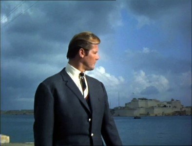
THE SAINT: Vendetta for the Saint (Jim O’Connolly: December, 1967)
The Saint (Roger Moore) walks along the harbour front at Naples (The
Grand Harbour) to the Ristorante Lionardo where he met the murdered
James Euston the previous night.
(Jean Pierre Borg, August 2007)
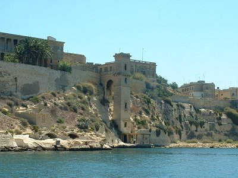
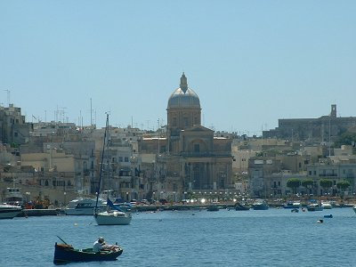
Photos: Ryan McGuinness
THE PROTECTORS:
A Matter of Life and Death
(Don Chaffey: Summer 1971)
The Contessa’s (Nyree Dawn Porter) yacht sails into the grand Harbour
past Fort St. Angelo, Valetta watched by Harry Rule (Robert Vaughn) and
Paul Buchet (Tony Anholt). At the end of the adventure, the yacht is
seen sheltering in Kalkara Creek.
(Ryan McGuinness, June 2005)
THE PROTECTORS:
It was all Over in Leipzig:
(Don Chaffey: Summer 1971)
Harry Rule (Robert Vaughn) is at a road block to prevent arms moving
across the city. He spots a girl (Tanya Bayona) with a baby carriage,
it is filled with grenades which spill out was it crashes down some
stairs. The girl is killed by a sniper (Paul Weston) before she can
give Harry any information (sniper shoots from balcony by The Grand
Harbour Hotel, Triqu Sant Ursula). Harry (Robert Vaughn) spots the
assassin (Paul Weston) and chases him across town through some gardens
(Upper Barakka Gardens) before he climbs down the ramparts and escapes
in a pickup truck.
Later Jim Palmer (Ron Randall) arrives in the harbour and
makes his way towards The Dolphin, The Contessa’s yacht (which in
Kalkara Creek facing Vittoriosa).
(Ryan McGuinness, June 2005)
Verdala Palace, Siġġiewi

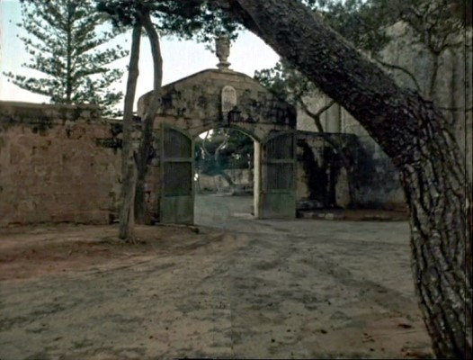
THE SAINT: Vendetta for the Saint (Jim O’Connolly: December, 1967)
Gang members swarm out of Don Pasquali’s villa in cars and on motor
scooters from after Simon Templer's escape.
(identified by Sietse Postma, August 2023).